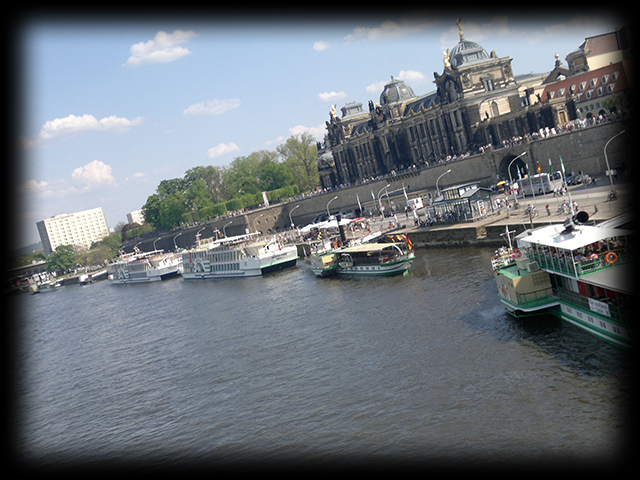
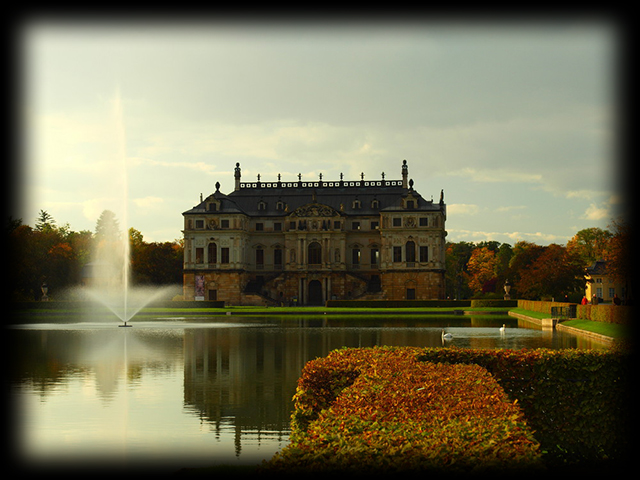
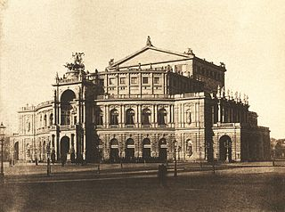
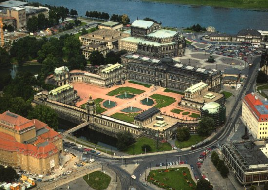

Die Elbe (plattdeutsch Elv, tschechisch: Labe) ist ein mitteleuropäischer Strom, der in Tschechien entspringt, durch Deutschland fließt und in die Nordsee mündet.
Die Kulturlandschaft Dresdner Elbtal umfasst den etwa 20 km langen Abschnitt des Flusslaufs der Elbe auf dem Gebiet der sächsischen Landeshauptstadt zwischen der südöstlichen
Stadtgrenze bei Dresden-Söbrigen und dem Dresden-Übigauer Elbbogen nahe der westlichen Stadtgrenze. Entlang seiner östlichen Hälfte wird das geschützte Tal nach Nordosten hin vom größtenteils bewaldeten Elbhang begrenzt.
Da das Elbtal klimatisch begünstigt liegt, wird am Elbhang an mehreren Stellen Wein angebaut. Die Jahresdurchschnittstemperaturen mit 9,3 Grad in Radebeulund fast 10 Grad in
Dresden-Neustadt zählen zu den höchsten in ganz Deutschland. Auf Grund verschiedener Aspekte, insbesondere dem des Hochwasserschutzes, durften und dürfen viele flussnahe Teile
der Kulturlandschaft nicht bebaut werden. Durch diese Stadtplanung wurden die weitläufigen Grünflächen des Dresdner Elbtals erhalten und in die Struktur der angrenzenden Stadtteile
einbezogen.

Die Tierwelt an der Elbe
Gattung
Infos
Säugetiere
Bemerkenswerte Säugetierarten an der Elbe sind der Fischotter und der Biber. Die Elbe-Biber befinden sich – ausgehend von ihrem Refugium im Dessauer Auwald – dank intensiver Naturschutzmaßnahmen seit einigen Jahren wieder in Ausbreitung an der Mittelelbe und den dortigen Nebenflüssen. Seit 1990 wird beispielsweise auch die niedersächsische Elbtalaue von dieser Tierart wieder besiedelt (2004 wurden allein dort rund 300 Tiere gezählt). Hier galt die Art seit 1819 als ausgestorben – Folge vor allem einer intensiven Bejagung
Vögel
An der Elbe und in ihren Auen kommt ein Großteil der mitteleuropäischen Arten als Brutvogel vor. Darunter sind Seltenheiten wie der Seeadler, der Schwarzstorch und verschiedene Limikolen. Hinzu kommen Zugvögel, die das Elbtal als Rastgebiet und Wanderlinie nutzen, besonders die untere Mittelelbe und den Mündungsbereich. Beispiele sind nordische Schwäne und Gänse aus Westsibirien (Sing- und Zwergschwan, Bless- und Saatgans und andere). Unter den Großvögeln sind die Weißstörche besonders populär, die entlang der Mittelelbe in zahlreichen Dörfern brüten. In Ausbreitung als Brutvogel ist der Kranich, der versteckt in Bruch- und Auwäldern nistet. Daneben ziehen viele nordische Kraniche über die Elbe und rasten dort
Amphibien
Mindestens 12 der 21 deutschen Lurcharten kommen entlang der Elbe in den stehenden Auengewässern vor. Besonders hervorzuheben sind dabei die großen Bestände von Moorfrosch und Laubfrosch, die anderenorts oft nur noch selten zu finden sind. Eine herausragende Rolle spielt das Elbetal für die Rotbauchunke – sie kommt vor allem in den Qualmgewässern hinter dem Deich vor, aber auch in Flutmulden des Vordeichlandes, die nicht bei jedem Hochwasser erreicht werden. Diese in Deutschland vom Aussterben bedrohte Art ist auf die jahreszeitlichen Wechsel der Wasserstände existenziell angewiesen
Insekten
Auf die Vielzahl der besonderen Insektenarten entlang der Elbe einzugehen, würde den Rahmen hier sprengen. Bemerkenswert ist, dass nicht nur in den Randgewässern, sondern in der Elbe selbst wieder viele Insektenlarven (Libellen, Eintagsfliegen etc.) vorkommen. Die größte Diversität herrscht aber sicherlich in den eingestreuten Trockenbiotopen. Auch die alten Eichenbäume entlang der Mittelelbe sind ein wichtiger Insekten-Lebensraum (unter anderem verschiedener Großkäfer)
Krebstiere
In Qualmgewässern und anderen temporären Tümpeln finden sich sogenannte „Urzeitkrebschen“ – Kiemenfußkrebse wie der Feenkrebs (Eubranchipus grubii) und der Schuppenschwanz oder Frühjahrs-Rückenschaler (Lepidurus apus). Deren Eier können jahrelange Trockenperioden überdauern, um dann bei Überschwemmung schlagartig zu schlüpfen und eine neue Generation zu produzieren. Ein ganz anderes Phänomen ist die massenhafte Ausbreitung der Chinesischen Wollhandkrabbe. Diese gelangte zu Beginn des 20. Jahrhunderts mit dem Ballastwasser von Frachtschiffen nach Norddeutschland. Dabei eroberte sich dieser Neozoon auch einen Großteil der Elbe als Lebensraum. Zwischen den 1930er- und den 1950er-Jahren kam es zu mehreren Zusammenbrüchen der Bestände infolge der Gewässerverschmutzung. Nach vierzig Jahren Abwesenheit wird diese Art seit den 1990er-Jahren nun wieder in Massen in der Elbe beobachtet. Das Stauwehr bei Geesthacht überwinden die Krebse, indem sie zu Millionen entweder die „Fischtreppe“ benutzen oder einfach über Land krabbeln
Der Große Garten
Der Große Garten in Dresden ist ein Park barocken Ursprungs. Die heutige größte Parkanlage der Stadt wurde ab 1676 auf Geheiß des Kurfürsten Johann Georg III.
angelegt und im Laufe seiner Geschichte mehrfach erweitert, so dass er heute einen annähernd rechteckigen Grundriss auf einer Fläche von circa 1,8 Quadratkilometern aufweist.
Seine Längsausdehnung beträgt etwa 1900 Meter, die Breite erreicht maximal 950 Meter.
Im Zentrum des Parks befindet sich als bedeutendstes Bauwerk das nach einem Entwurf Johann Georg Starckes um 1680 errichtete Palais.
Der Große Garten wurde im Laufe seiner dreihundertjährigen Geschichte vielfach überformt, so dass die barocke Grundstruktur zwar bis heute erkennbar geblieben ist,
aber von einem Barockgarten im engeren Sinne nicht mehr gesprochen werden kann.
Neben dem Palais finden sich im Großen Garten die folgenden Anlagen und Häuser:
Kavaliershäuser
Parktheater
Skulpturen
Torhäuser
Zoologischer Garten
Carolasee und Neuteich
Pikardie
Parkeisenbahn
Freilichtbühne
Puppentheater
Botanischer Garten
Gläserne Manufaktur

Die Semperoper
Die Semperoper befindet sich am Theaterplatz im historischen Stadtkern von Dresden.
Sie ist nach ihrem Architekten Gottfried Semper benannt und hat als Hof- und Staatsoper Sachsens eine lange geschichtliche Tradition.
Klangkörper der Staatsoper ist die traditionsreiche Sächsische Staatskapelle Dresden.
Der erste Bau
Von 1838 bis 1841 errichtete der Baumeister Gottfried Semper (1803–1879) ein neues königliches Hoftheater. Der Rundbau in den Formen der italienischen Frührenaissance wurde als eines der schönsten europäischen Theater berühmt. Das erste Opernhaus Sempers lag erheblich näher zum Schloss als sein heute noch bestehender zweiter Theaterbau; vor der Oper wurde 1840 der Vorläufer des heutigen Theaterplatzes angelegt.[1] Am 21. September 1869 wurde das Gebäude bei einem Brand völlig zerstört.
Schon vier Wochen nach der Brandkatastrophe des ersten Semperschen Hoftheaters begannen die Bauarbeiten an einem Interimstheater am Zwingerwall hinter den Ruinen des alten Theaters. Nach nur sechs Wochen Bauzeit wurde die mit einfachen Konstruktionsmitteln errichtete Spielstätte, die rund 1800 Besuchern Platz bot und im Volksmund den Beinamen „Bretterbude“ trug, mit Goethes Iphigenie auf Tauris am 2. Dezember 1869 eröffnet.
Der zweite Bau
Gottfried Semper musste 1849 durch seine Beteiligung an den Maiaufständen fliehen und durfte viele Jahre lang sächsischen Boden nicht mehr betreten. Im Ausland schuf er in dieser Zeit zum Beispiel das Wiener Burgtheater. Nach der Zerstörung der ersten Semperoper 1869 wurde bereits 1871 mit dem Bau des Zweiten Königlichen Hoftheaters begonnen. Während der Bauarbeiten durfte Gottfried Semper immer noch nicht nach Sachsen zurückkehren. Auf Bitten der Dresdner Bevölkerung entwarf er deshalb aus der Ferne ein zweites Gebäude, das unter der Leitung seines ältesten Sohnes Manfred Semper (1838–1913) von 1871 bis 1878 am Theaterplatz erbaut wurde.
Der Theaterbau verfügt über eine prachtvolle Innenausstattung. Dem ehemaligen Mitarbeiter Gutkaes, Ludwig Teubner, erteilte Manfred Semper den Auftrag, eine neue digital anzeigende Uhr nach dem Vorbild Gutkaes zu erstellen.
Dieser zweite Bau wurde in der Nacht des 13. Februar 1945 bei den Luftangriffen auf Dresden getroffen und stark zerstört.
Ab 1948 konnte der Spielbetrieb im Schauspielhaus Dresden als „Großes Haus des Staatstheaters“ für Oper, Ballett, Schauspiel und Staatskapelle fortgesetzt werden. Die feierliche Eröffnung fand am 22. September 1948 mit Beethovens Fidelio statt. Erst im Jahr 1983 fand wieder eine verwaltungstechnische Trennung zwischen Oper, Ballett, Staatskapelle und dem Schauspiel statt: Es entstanden das Staatsschauspiel und die Staatsoper Dresden. Am symbolischen Datum des 13. Februar 1985 erhielten die musikalischen Sparten nach 40 Jahren ihr wiedererstandenes Operngebäude, die Semperoper, zurück.
Der dritte Bau
Nach dem Zweiten Weltkrieg bereiteten 1946–1955 Sicherungsarbeiten sowie konzeptionelle Studien 1968–1976 den Wiederaufbau vor.
Am 24. Juni 1977 erfolgte die Grundsteinlegung und der Wiederaufbau unter der Leitung von Wolfgang Hänsch als Chefarchitekt. Hierbei wurden einerseits der Zuschauerraum erweitert, andererseits die Wände im Bühnenbereich nach außen versetzt, um dem gestiegenen Platzbedarf des modernen Opernbetriebes gerecht zu werden. Die Anzahl der Sitzplätze wurde auf 1300 verringert.Ansonsten wurde das Gebäude Sempers Plänen entsprechend wiederaufgebaut.
Angefügt wurde ein moderner Bau, der als Probebühne, Funktionsgebäude und Sitz der Verwaltung genutzt wird. Verbunden ist er mit dem Operngebäude über Brücken. Die Außenfassade ist an den Ecken mit vier Sandsteinmasken von Peter Makolies geschmückt, die in der Zeit von 1982 bis 1984 gefertigt wurden. Die Masken haben eine Größe von 2,7 mal 5,2 Metern.
Am 13. Februar 1985, dem 40. Jahrestag der kriegsbedingten Zerstörung, konnte die Semperoper mit Carl Maria von Webers Oper Der Freischütz unter der Leitung von Intendant Max Gerd Schönfelder wiedereröffnet werden – es war dieses Werk, mit dem das Opernhaus am 31. August 1944 geschlossen worden war. Im Jahr 1985 wurde auch eine zentrale Theaterkasse eingerichtet. Sie befindet sich in der benachbarten Altstädtischen Hauptwache.
Obwohl sie schon Staatsoper war, erhielt die Oper zusätzlich nach der Wende den offiziellen Titel Sächsische Staatsoper. Das Hochwasser der Elbe im August 2002 fügte dem Opernhaus einen Schaden von 27 Millionen Euro zu. Drei Monate nach der Hochwasserkatastrophe eröffneten am 9. November 2002 Tänzer des Semperoper Balletts und die Sächsische Staatskapelle die Spielzeit mit dem Ballett Illusionen – wie Schwanensee.
Im Rahmen der 800-Jahr-Feierlichkeiten der Stadt Dresden fand am 13. Januar 2006 als Fortführung einer von 1925 bis 1939 bereits bestehenden Tradition erstmals wieder ein Dresdner Opernball im Saal und auf der Bühne statt. Für diesen seither jährlich veranstalteten Ball wird die Bestuhlung der Oper teilweise entfernt.
Der zweite Bau nach 1880:

Fotografie von August Kotzsch
Der Dresdner Zwinger mitten in der sächsischen Landeshauptstadt ist eines der bekanntesten Barockbauwerke Deutschlands und neben der Frauenkirche wohl das berühmteste Baudenkmal der Stadt Dresden. Er beherbergt Museen von Weltruf und ist Bühne für Musik- und Theaterveranstaltungen.
Die den Innenhof umgebenden Gebäude des Zwingers beherbergen seit 1728 weltweit bekannte und für die Öffentlichkeit zugängliche Museen, die von den Staatlichen Kunstsammlungen Dresden gepflegt und präsentiert werden.
Die Staatlichen Schlösser, Burgen und Gärten Sachsen sind mit Sonderausstellungen im Französischen Pavillon, der Bogengalerie L oder dem Wallpavillon präsent.
Museen der Staatlichen Kunstsammlungen:
Gemäldegalerie Alte Meister
Wo: Semperbau am Zwinger
täglich von 10 bis 18 Uhr geöffnet
montags geschlossen
Rüstkammer
Wo: Semperbau am Zwinger
täglich von 10 bis 18 Uhr geöffnet
montags geschlossen
Porzellansammlung
Wo: Zwinger, Eingang Glockenspielpavillon
täglich von 10 bis 18 Uhr geöffnet
montags geschlossen
Mathematisch-Physikalischer Salon
Wo: Zwinger
täglich von 10 bis 18 Uhr geöffnet
Wegen Umbauarbeiten geschlossen
Luftbild des Zwingers:

Fotografie von Dirk Emmelmann
Das Grüne Gewölbe in Dresden ist die historische Museumssammlung der ehemaligen Schatzkammer der Wettiner Fürsten von der Renaissance bis zum Klassizismus. Der Name der umfangreichsten Kleinodiensammlung Europas leitet sich von den ehemals malachitgrün gestrichenen Säulenbasen und -kapitelle in den ursprünglichen Gewölberäumen her. Bereits seit 1724 sind die Sammlungsräume des Grünen Gewölbes öffentlich zugänglich.
Austellungsraum
Schätze
Saal der Kunststücke
Schatzkunst aus der zweiten Hälfte des 16. Jahrhunderts, u. a. „Daphne als Trinkgefäß“
Mikro-Kabinett
Mikroschnitzereien und -drechseleien z. B. aus Elfenbein, u. a. der „Kirschkern mit den 185 Angesichtern“
Kristall-Kabinett
Bergkristalle aus Freiburg und Mailand, Glas aus Venedig, Hinterglasmalereien
Erster Raum des Kurfürsten
Schatzkunst aus der ersten Hälfte des 17. Jahrhunderts, u. a. „Große Fregatte aus Elfenbein, von Neptun getragen“
Zweiter Raum des Kurfürsten
Schatzkunst aus der zweiten Hälfte des 17. Jahrhunderts
Raum der königlichen Pretiosen
Elfenbein- und Perlfiguren, Galanteriewaren, Tischuhren, u. a. „Nautiluspokal mit Venus (Venusschale)“
Dinglinger-Saal
Dem Hofgoldschmied Johann Melchior Dinglinger gewidmeter Saal, u. a. seinen Kunstwerken „Hofstaat zu Delhi am Geburtstag des Großmoguls Aurangzeb“, das „Goldene Kaffeezeug“, „Bad der Diana“ und „Apis-Altar“
Email-Kabinett
Email-Miniaturen und ein größeres Email-Bild
Raum der reisenden Pretiosen
Historische Behälter (Etuis), den jeweiligen Formen der Gefäße, Pokale und sonstigen Objekte angepasst, zum Transport der Kunstgegenstände